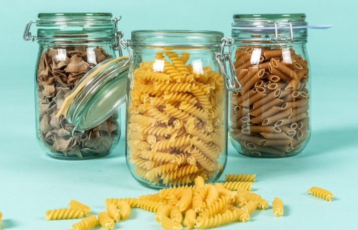

En un mundo en donde la montaña de basura crece día a día, dos amigos apasionados decidieron unirse y crear una solución innovadora para minimizar el impacto ambiental de las compras, empezando por los envases innecesarios de las compras diarias.
En el año 2021, después de innumerables esfuerzos por reducir los desechos, estos emprendedores dieron vida a Pieter Pot, un concepto que está revolucionando la forma de hacer compras sostenibles y ecológicas.
Pieter Pot es mucho más que un simple supermercado. Es un supermercado digital que te permite descubrir más de 200 productos de alta calidad, desde alimentos no perecederos hasta frutos secos, legumbres, semillas y una amplia variedad de hierbas y especias, todo sin generar residuos innecesarios de envases plásticos.
La clave de esta propuesta es la compra a granel para reducir costos y la huella de carbono. Se caracterizan por su enfoque circular: todos los productos se almacenan en envases retornables. Una vez que haces tu pedido, estos envases se entregan directamente en tu casa a través de vehículos eléctricos o bicicletas. Pero aquí viene lo interesante: estos envases tienen un pequeño costo, pero si los devuelves en tu próxima compra, ¡se te abona directamente a tu cuenta!
Con Pieter Pot, el proceso de compra es fácil y conveniente, y te permite hacer una diferencia significativa en la reducción de desechos y emisiones de CO2. Su impacto es tres veces mayor: reducen los desechos de envases, disminuyen las emisiones de CO2 y estimulan un cambio de sistema hacia un modelo más sostenible.
Actualmente, este innovador supermercado está operando con gran éxito en los Países Bajos, donde ha logrado superar los 5 millones de envases desechables innecesarios. Su visión no se detiene ahí, Pieter Pot ha comenzado su expansión internacional en Bélgica, llevando su propuesta ecológica a nuevas fronteras.
La filosofía de Pieter Pot es clara: demostrar que las cosas pueden hacerse de otra manera, combinando la sostenibilidad con la comodidad y el atractivo. Al igual que otros ejemplos revolucionarios en el mundo, buscan cambiar la percepción sobre cómo vivimos y consumimos. ¡Y lo están logrando!
Con Pieter Pot, comprar sin desperdicios ya no es un sueño lejano, sino una realidad accesible y emocionante. Es un paso significativo hacia un modelo de consumo más sostenible y consciente con nuestro planeta. Así que, si te preocupa el medio ambiente y deseas hacer una diferencia real, podés impulsar esta forma responsable de comprar sin desperdicios en tu ciudad. ¿Qué estamos esperando para crear este tipo de supermercados? El cambio es ahora y empieza siempre por unx.